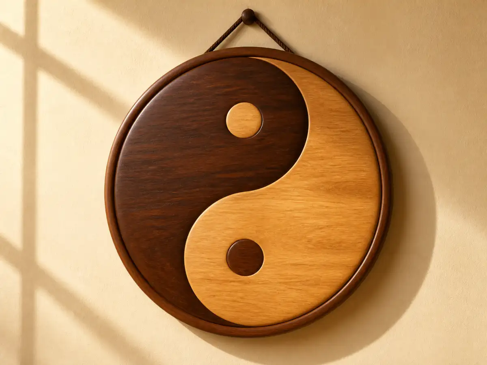
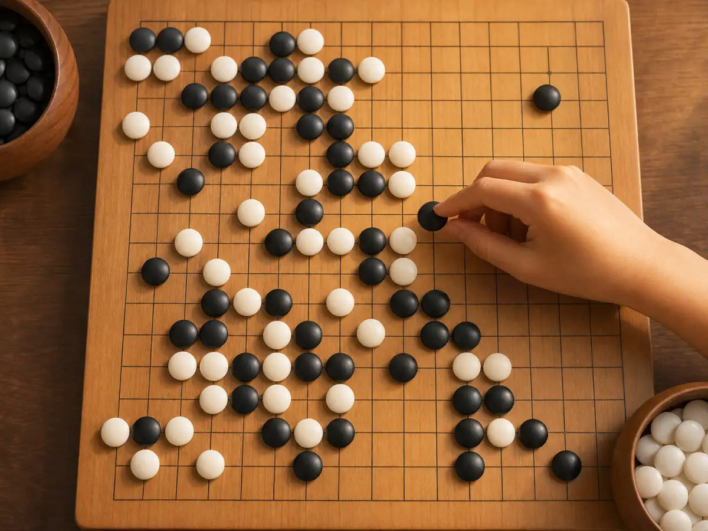
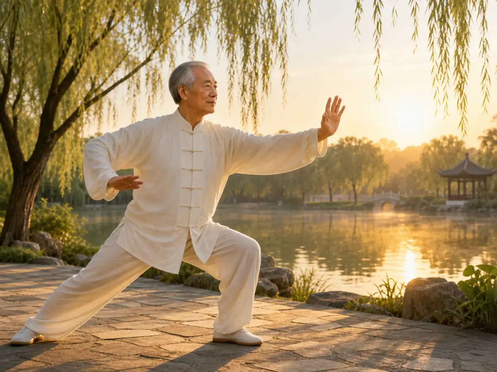

阴和阳：太阳与月亮的舞蹈
Yin and Yang: The Dance of Sun and Moon
Page 1
太阳和月亮
The Sun and the Moon
The sun warms the day. The moon cools the night.
用最简单的方法来理解，就是看天。
白天，太阳出来了。太阳是热的、亮的、有力的。它让万物生长，让人感到温暖。太阳就是"阳"的化身。
晚上，太阳走了，月亮升起来。月亮是凉的、柔和的、安静的。它让人静下来，让世界休息。月亮就是"阴"的化身。
太阳和月亮，一个管白天，一个陪夜晚。它们当然不是在"合作上班"，但放在阴阳的想法里，正好很适合拿来打比方。
没有太阳，地球会冻成冰。没有黑夜和月亮，生物就没办法休息。
The easiest way to understand yin and yang is to look up at the sky.
In the daytime, the sun comes out. The sun is warm, bright, and strong. It helps plants grow and makes people feel warm. The sun is a good symbol of yang.
At night, the sun goes away and the moon rises. The moon is cool, soft, and quiet. It helps people calm down and lets the world rest. The moon is a good symbol of yin.
The sun belongs to the day. The moon keeps the night company. Of course, they are not really taking turns at a job. But in the idea of yin and yang, they are a helpful pair to think about.
Without the sun, Earth would freeze. Without night, living things would have no time to rest.
Page 2
太极图 - 圆圈里的智慧
The Taiji Diagram: Wisdom in a Circle

Black and white curl together, and each side holds a dot of the other.
如果你见过中国功夫的电影，你大概见过这个图案：一个圆圈，里面有一黑一白两个小水滴，抱在一起。白的里面有个小黑点，黑的里面有个小白点。
这个图案叫"太极图"，是阴和阳的符号。
它要告诉我们的道理是：阴和阳不是分开的，它们是抱在一起的。
白天到了最亮的时候，就开始慢慢变暗 - 走进黑夜。黑夜到了最暗的时候，又开始慢慢变亮 - 走进白天。黑里面永远有一点白，白里面永远有一点黑。这就是那个小黑点和小白点的意思。
If you have seen a Chinese kung fu movie, you may have seen this picture: a circle with one black shape and one white shape curled together like two drops of water. Inside the white shape is a small black dot. Inside the black shape is a small white dot.
This picture is called the taiji diagram. It is a famous symbol of yin and yang.
What does it mean? Yin and yang are not completely separate. They belong together.
When daytime reaches its brightest point, it slowly starts moving toward night. When night reaches its darkest point, it slowly starts moving toward day. There is always a little white inside black, and a little black inside white. That is what the two small dots mean.
Page 3
围棋 - 黑白世界的较量
Go: A Battle of Black and White

Black and white Go stones take turns, surround each other, and change the board.
知道了阴和阳，你再看看周围，会发现它无处不在。
围棋 - 黑白世界的较量
围棋常被人拿来说明阴阳。棋子只有黑和白，双方轮流落子，一暗一明，很容易让人想到这种两面互相牵制、又互相成全的关系。
下围棋的时候，不能只顾着攻击，也不能只顾着防守。攻击（阳）和防守（阴）要随时切换。高手下棋，就像在棋盘上画太极图 - 黑和白纠缠在一起，谁也离不开谁。你中有我，我中有你。
身边处处有阴阳
夏天常被归到阳，冬天常被归到阴；运动偏阳，休息偏阴。古人很喜欢这样看事物。不过这些对应关系只是帮助理解的说法，不是说每个人、每件事都得被硬塞进一边。
好的厨师做菜，一定要有阴有阳 - 冷的配热的，软的配脆的，淡了配咸的。中医给人看病，也是看你身体里的阴和阳是不是平衡了。
Once you understand yin and yang, you may start seeing the idea all around you.
Go: a battle of black and white
People often use the game of Go to explain yin and yang. The stones are only black and white. The two sides take turns placing them on the board. One dark, one light. They push against each other, but they also make the game together.
When you play Go, you cannot just attack. You cannot just defend either. Attack can feel like yang. Defense can feel like yin. A good player keeps changing between the two.
When masters play, it can look almost like a taiji diagram on the board. Black and white twist around each other. Neither side can ignore the other.
Yin and yang are everywhere
Summer is often paired with yang. Winter is often paired with yin. Movement leans toward yang. Rest leans toward yin. People long ago liked using this way to think about the world.
But these pairs are only tools for understanding. They do not mean every person or every thing must be forced into one side.
A good cook also thinks about balance: cold with hot, soft with crunchy, mild with salty. In Chinese medicine, doctors may also talk about whether yin and yang in the body are balanced.
Page 4
太极拳 - 像水一样运动的功夫
Tai Chi: Moving Like Water

Tai Chi moves slowly and smoothly, like water finding its path.
如果你在公园里见过有人打太极拳，你会觉得它和别的运动很不一样。它不急，不冲，不硬碰硬。动作慢慢展开，一手出去，另一手跟上，像水在流，也像风在转。
很多人喜欢用太极拳来说明阴阳。前进的时候，后面有收；伸出去的时候，里面还有稳；看起来柔，可是身体一直在用力。阴和阳不是分开的两截，而是在一个动作里来回变化。
所以，太极拳不是只会慢慢比划。它是在提醒人：有时候，最稳的力量不是硬顶，而是顺着变化，找到平衡。
If you have seen people doing Tai Chi in a park, you may notice that it feels different from many other kinds of exercise. It does not rush. It does not slam forward. The movements open slowly, one hand leading and the other following, like water flowing or wind turning.
Many people use Tai Chi to help explain yin and yang. When one part of the body moves forward, another part draws back. When an arm stretches out, the body stays calm and steady inside. The movement looks soft, but real strength is still there. Yin and yang are not chopped into two separate halves. They keep changing inside one motion.
That is why Tai Chi is not just slow waving. It reminds people that the steadiest kind of strength is not always stiff or hard. Sometimes it comes from moving with change and finding balance.
小结
In Summary
阴阳这套想法最迷人的地方，也许就在这里：它提醒人别把世界看得太死。强和弱会变，冷和热会转，事情常常不是只站一边。
就像太阳和月亮，轮流上场，才有了白天和黑夜。假如你愿意像古人那样，抬头看看天，你会发现：看起来很简单的事情，里面常常有大智慧。
Maybe the most interesting part of yin and yang is this: it reminds us not to see the world as stuck in one shape. Strong and weak can change. Cold and hot can turn into each other. Many things do not belong to only one side.
The sun and moon take turns, and that is how we get day and night. If you look up at the sky the way people long ago did, you may find that simple things can hold big ideas.